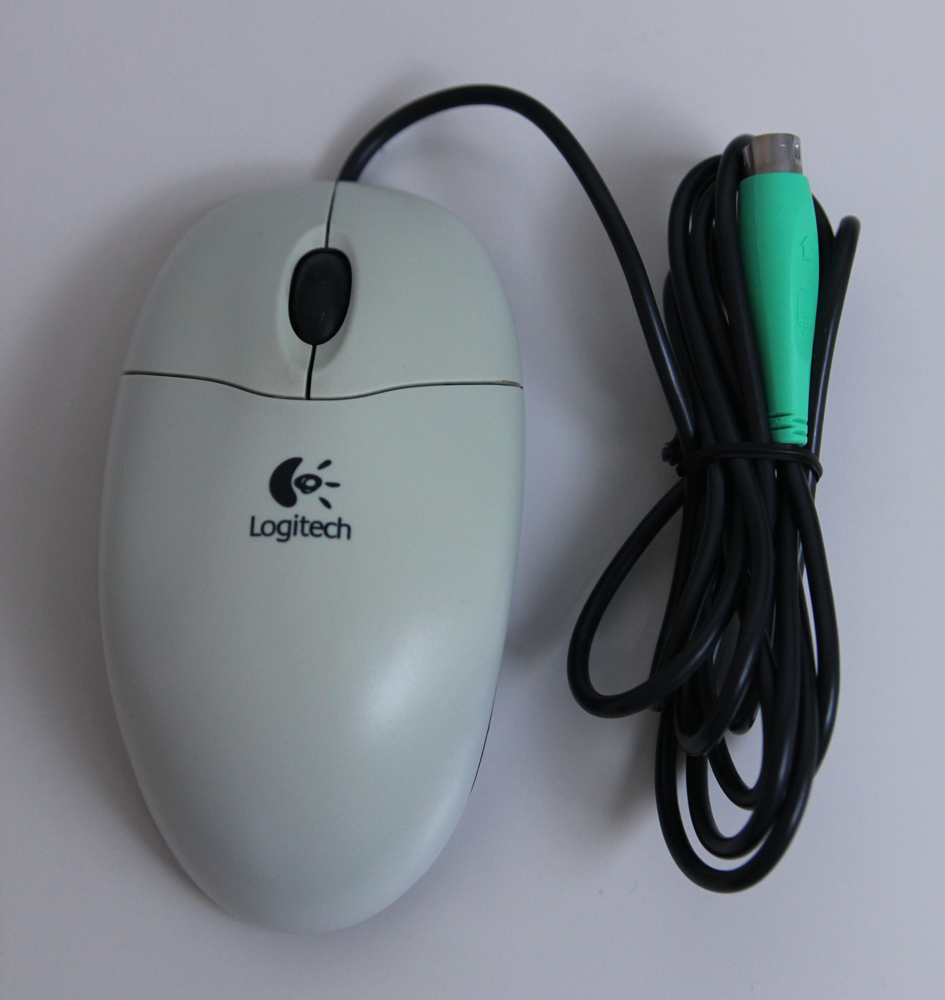

In the modern era, where computers have become an integral part of our daily lives, the importance of ergonomic tools cannot be overstated. One such essential ergonomic accessory is the ergonomic mouse. But what exactly is an ergonomic mouse, and how does it contribute to reducing hand strain and discomfort during extended computer use? Let's delve into the key aspects of its design and explore the benefits it brings to users.
Table of Content
______________________________________________________________________________
______________________________________________________________________________
1. Understanding Ergonomics
Door man, CC BY-SA 3.0, via Wikimedia Commons
Before delving into the specifics of an ergonomic mouse, it's crucial to understand the concept of ergonomics. Ergonomics is the study of designing tools and environments to fit the capabilities and limitations of the human body. In the context of computer peripherals, including mice, ergonomic design aims to optimize user comfort and productivity while minimizing the risk of musculoskeletal issues.
2. Design Features of an Ergonomic Mouse
a. Contoured Shape
One of the defining features of an ergonomic mouse is its contoured shape. Unlike traditional mice, which often have a flat and one-size-fits-all design, ergonomic mice are crafted to fit the natural curves of the hand. This contoured shape promotes a more relaxed and comfortable hand position, reducing strain on the muscles and tendons.
b. Vertical Orientation
Many ergonomic mice are designed with a vertical orientation, allowing the hand to be in a handshake position rather than a palm-down position. This vertical alignment can alleviate pressure on the wrist and forearm, preventing the development of conditions such as carpal tunnel syndrome.
c. Customizable Buttons
Ergonomic mice often come equipped with customizable buttons that allow users to assign specific functions to different mouse buttons. This feature enables users to perform tasks more efficiently and reduces the need for repetitive movements, which can contribute to hand fatigue.
d. Thumb and Pinky Supports
Some ergonomic mice incorporate supports for the thumb and pinky finger. These supports provide additional stability and reduce the strain on the hand by distributing pressure more evenly.
3. Benefits of Using an Ergonomic Mouse
a. Reduced Hand Strain and Discomfort
The primary benefit of using an ergonomic mouse is the reduction of hand strain and discomfort. By aligning the mouse with the natural contours of the hand and allowing for a more relaxed grip, ergonomic mice contribute to a healthier and more comfortable computing experience, particularly during prolonged use.
b. Prevention of Musculoskeletal Issues
Ergonomic mice can help prevent musculoskeletal issues such as repetitive strain injuries (RSI) and carpal tunnel syndrome. The thoughtful design features, including the vertical orientation and customizable buttons, minimize the repetitive motions that can lead to these conditions.
c. Improved Productivity
Comfortable users are often more productive. An ergonomic mouse can contribute to increased productivity by reducing the physical strain associated with prolonged computer use, allowing users to focus on tasks without the distraction of discomfort.
4. Popular Ergonomic Mouse Brands
If you're considering making the switch to an ergonomic mouse, several reputable brands offer a variety of options tailored to different preferences and needs. Some of the well-known brands in the ergonomic mouse market include:
a. Logitech: Logitech is a pioneer in computer peripherals, offering a range of ergonomic mice with advanced features and customizable settings.
b. Microsoft: Microsoft, a household name in technology, provides ergonomic mice designed for comfort and performance, suitable for various computing tasks.
c. Evoluent: Evoluent specializes in vertical mice, emphasizing a natural handshake position to reduce strain on the wrist and forearm.
d. Razer: Known for gaming peripherals, Razer also offers ergonomic mice with customizable features suitable for both work and play.
e. Anker: Anker produces affordable yet high-quality ergonomic mice, focusing on user comfort and functionality.
Conclusion
In conclusion, an ergonomic mouse is a valuable tool for anyone who spends extended periods working on a computer. Its thoughtful design, including a contoured shape, vertical orientation, customizable buttons, and thumb and pinky supports, all work together to create a more comfortable and ergonomic computing experience.


{kind=link}